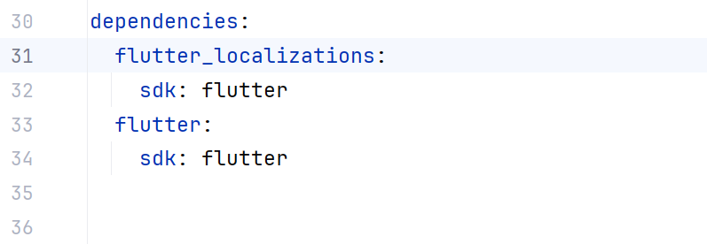
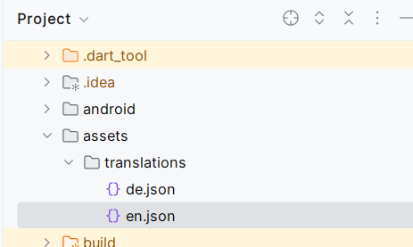
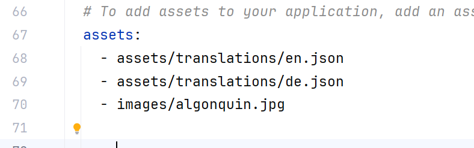
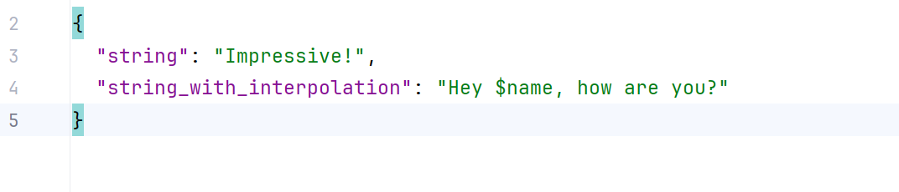
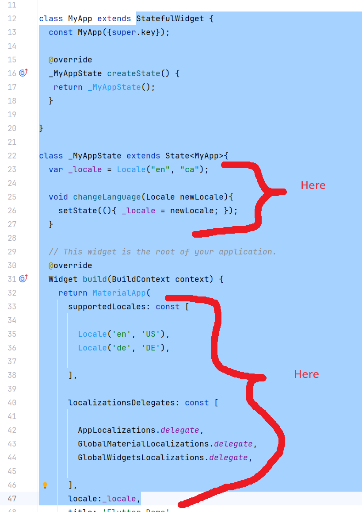

This refers to supporting other languages for your application. There is a really good tutorial at this website:
https://www.flutterclutter.dev/flutter/tutorials/internationalization-i18n-in-flutter-an-easy-and-quick-approach/2020/213/However the tutorial uses Dart version 2 and won't compile in Dart version 3. Have a look at the Week11 branch from the CST2335 repository. It has the code from the tutorial that's been refactored to work with Dart version 3.
Basically are the steps are:




AppLocalizations.of(context)!.translate('string')!; but pass in the string Key that you want to use and the code will return the correct translation for your current locale.

static void setLocale(BuildContext context, Locale newLocale) async {
_MyAppState? state = context.findAncestorStateOfType<_MyAppState>();
state?.changeLanguage(newLocale);
}
Whenever you want to change your language that is shown, just call the MyApp.setLocale() function with the new Locale() object. It must be one of the languages that you support in your assets: section.
Have a look at the Week11 branch of the example code for this course. It has the AppLocalizations and LocalizationsDelegate already implemented so you can just copy and paste those files into your project.